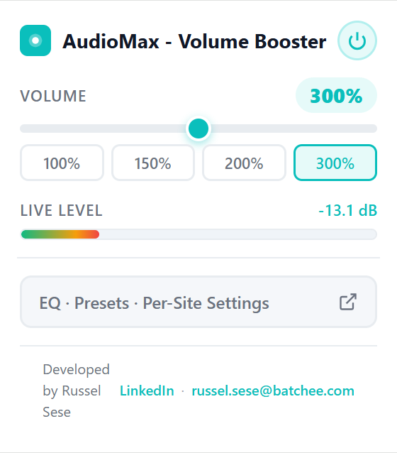
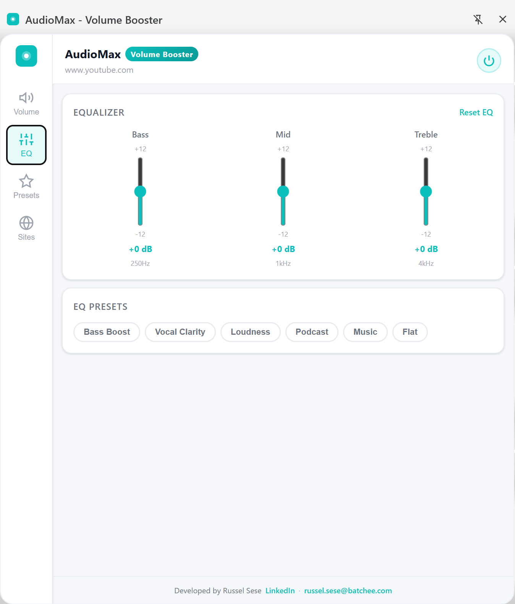
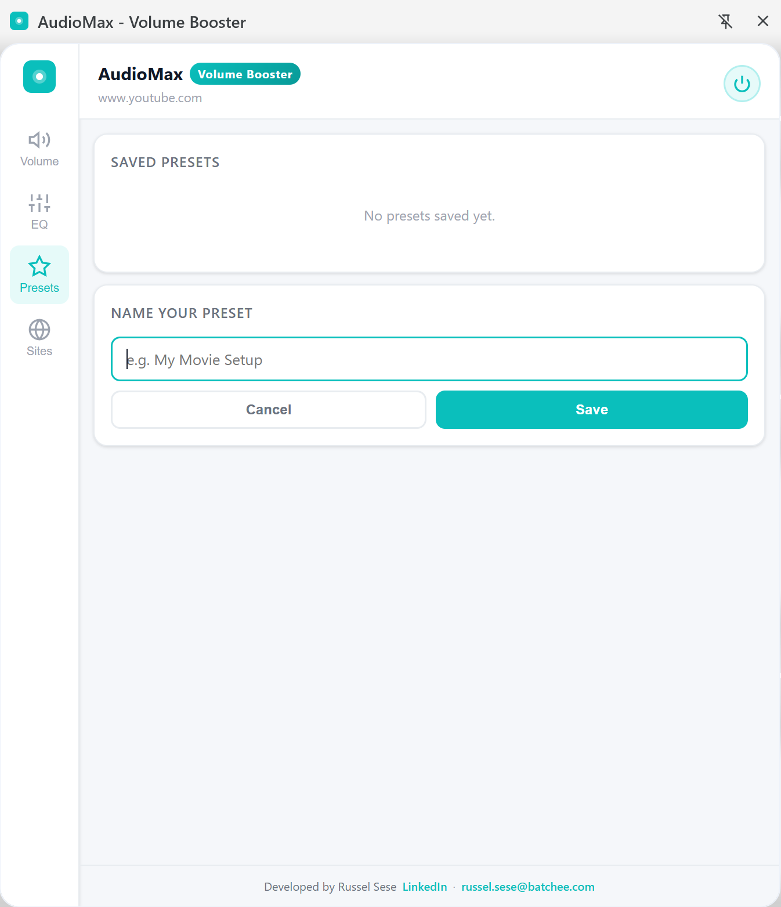

Volume Boost (0–600%)
Amplify any audio far beyond Chrome's default 100% cap. Works on videos, music, podcasts, and voice calls on any website.
AudioMax amplifies any audio in Chrome far beyond the default 100% limit — with a built-in 3-band EQ, real-time dB meter, named presets, and per-site settings. Zero distortion.
Features
AudioMax is the only volume booster with a full EQ, live dB monitoring, and named presets — built right into Chrome.
Amplify any audio far beyond Chrome's default 100% cap. Works on videos, music, podcasts, and voice calls on any website.
Independently control Bass (250 Hz), Mid (1 kHz), and Treble (4 kHz) with ±12 dB per band. Built-in chips: Bass Boost, Vocal Clarity, Loudness, Podcast, Music, Flat.
Watch your audio levels live with a color-coded bar and dB readout updated 10 times per second. Know exactly what's happening with your audio.
Save your perfect volume and EQ configuration with a custom name. Load any preset instantly with one click — your settings, always ready.
Set different volume and EQ levels for each website. AudioMax remembers your preferences per domain and applies them automatically.
Built-in DynamicsCompressor prevents crackling and distortion at high boost levels. Louder doesn't have to mean worse audio quality.
See it in action
Quick volume control from the popup. Full EQ, presets, and site controls from the persistent side panel.
Click the AudioMax icon for a lightweight popup with a volume slider and real-time dB readout. Perfect for quick adjustments without opening the full panel.

The side panel EQ gives you full control over your audio signature. Boost bass for music, cut mid for clearer dialogue, or use a preset chip to jump straight to the right sound.

Name and save any combination of volume and EQ as a preset. Plus, AudioMax applies different settings per domain automatically — no manual switching needed.

How it works
Add it from the Chrome Web Store — free, no account or sign-in required.
Navigate to YouTube, Netflix, Spotify, or any site with audio or video.
The popup opens instantly. Drag the slider to boost volume beyond 100%.
Access full EQ controls, save named presets, and set per-site preferences — all while you browse.
Compatibility
AudioMax processes audio at the browser level using the Web Audio API, so it works on virtually any site that plays audio or video.
Privacy
All audio processing happens entirely in your browser using the Web Audio API. Nothing leaves your machine.
No analytics, no telemetry, no usage data collected or transmitted anywhere.
AudioMax is completely free with no advertising or data selling of any kind.
Your volume and EQ preferences are saved locally via Chrome's sync storage — fully under your control.
Install and start boosting immediately. No account, no email, no setup required.
FAQ
It works on the vast majority of websites including YouTube, Netflix, and Spotify. A small number of sites with non-standard audio implementations may not be fully supported.
AudioMax includes a built-in DynamicsCompressor that significantly reduces distortion at high boost levels. At very high levels (400%+) some degradation is expected, but it's far less than other volume boosters.
No. AudioMax processes audio per-tab. Your other open tabs are completely unaffected.
Yes — fully free with no premium tier, ads, or data selling. Ever.
Yes, AudioMax works on all desktop platforms where Chrome is supported — Windows, macOS, and Linux.